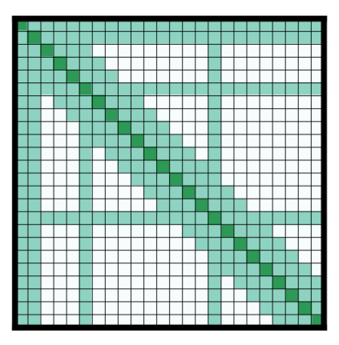

Summary of the models¶
This is a summary of the models available in ü§ó Transformers. It assumes you‚Äôre familiar with the original transformer model. For a gentle introduction check the annotated transformer. Here we focus on the high-level differences between the models. You can check them more in detail in their respective documentation. Also check out the pretrained model page to see the checkpoints available for each type of model and all the community models.
Each one of the models in the library falls into one of the following categories:
Autoregressive models are pretrained on the classic language modeling task: guess the next token having read all the previous ones. They correspond to the decoder of the original transformer model, and a mask is used on top of the full sentence so that the attention heads can only see what was before in the text, and not what’s after. Although those models can be fine-tuned and achieve great results on many tasks, the most natural application is text generation. A typical example of such models is GPT.
Autoencoding models are pretrained by corrupting the input tokens in some way and trying to reconstruct the original sentence. They correspond to the encoder of the original transformer model in the sense that they get access to the full inputs without any mask. Those models usually build a bidirectional representation of the whole sentence. They can be fine-tuned and achieve great results on many tasks such as text generation, but their most natural application is sentence classification or token classification. A typical example of such models is BERT.
Note that the only difference between autoregressive models and autoencoding models is in the way the model is pretrained. Therefore, the same architecture can be used for both autoregressive and autoencoding models. When a given model has been used for both types of pretraining, we have put it in the category corresponding to the article where it was first introduced.
Sequence-to-sequence models use both the encoder and the decoder of the original transformer, either for translation tasks or by transforming other tasks to sequence-to-sequence problems. They can be fine-tuned to many tasks but their most natural applications are translation, summarization and question answering. The original transformer model is an example of such a model (only for translation), T5 is an example that can be fine-tuned on other tasks.
Multimodal models mix text inputs with other kinds (e.g. images) and are more specific to a given task.
Autoregressive models¶
As mentioned before, these models rely on the decoder part of the original transformer and use an attention mask so that at each position, the model can only look at the tokens before the attention heads.
Original GPT¶
Improving Language Understanding by Generative Pre-Training, Alec Radford et al.
The first autoregressive model based on the transformer architecture, pretrained on the Book Corpus dataset.
The library provides versions of the model for language modeling and multitask language modeling/multiple choice classification.
GPT-2¶
Language Models are Unsupervised Multitask Learners, Alec Radford et al.
A bigger and better version of GPT, pretrained on WebText (web pages from outgoing links in Reddit with 3 karmas or more).
The library provides versions of the model for language modeling and multitask language modeling/multiple choice classification.
CTRL¶
CTRL: A Conditional Transformer Language Model for Controllable Generation, Nitish Shirish Keskar et al.
Same as the GPT model but adds the idea of control codes. Text is generated from a prompt (can be empty) and one (or several) of those control codes which are then used to influence the text generation: generate with the style of wikipedia article, a book or a movie review.
The library provides a version of the model for language modeling only.
Transformer-XL¶
Transformer-XL: Attentive Language Models Beyond a Fixed-Length Context, Zihang Dai et al.
Same as a regular GPT model, but introduces a recurrence mechanism for two consecutive segments (similar to a regular RNNs with two consecutive inputs). In this context, a segment is a number of consecutive tokens (for instance 512) that may span across multiple documents, and segments are fed in order to the model.
Basically, the hidden states of the previous segment are concatenated to the current input to compute the attention scores. This allows the model to pay attention to information that was in the previous segment as well as the current one. By stacking multiple attention layers, the receptive field can be increased to multiple previous segments.
This changes the positional embeddings to positional relative embeddings (as the regular positional embeddings would give the same results in the current input and the current hidden state at a given position) and needs to make some adjustments in the way attention scores are computed.
The library provides a version of the model for language modeling only.
Reformer¶
Reformer: The Efficient Transformer, Nikita Kitaev et al .
An autoregressive transformer model with lots of tricks to reduce memory footprint and compute time. Those tricks include:
Use Axial position encoding (see below for more details). It’s a mechanism to avoid having a huge positional encoding matrix (when the sequence length is very big) by factorizing it into smaller matrices.
Replace traditional attention by LSH (local-sensitive hashing) attention (see below for more details). It’s a technique to avoid computing the full product query-key in the attention layers.
Avoid storing the intermediate results of each layer by using reversible transformer layers to obtain them during the backward pass (subtracting the residuals from the input of the next layer gives them back) or recomputing them for results inside a given layer (less efficient than storing them but saves memory).
Compute the feedforward operations by chunks and not on the whole batch.
With those tricks, the model can be fed much larger sentences than traditional transformer autoregressive models.
Note: This model could be very well be used in an autoencoding setting, there is no checkpoint for such a pretraining yet, though.
The library provides a version of the model for language modeling only.
XLNet¶
XLNet: Generalized Autoregressive Pretraining for Language Understanding, Zhilin Yang et al.
XLNet is not a traditional autoregressive model but uses a training strategy that builds on that. It permutes the tokens in the sentence, then allows the model to use the last n tokens to predict the token n+1. Since this is all done with a mask, the sentence is actually fed in the model in the right order, but instead of masking the first n tokens for n+1, XLNet uses a mask that hides the previous tokens in some given permutation of 1,…,sequence length.
XLNet also uses the same recurrence mechanism as Transformer-XL to build long-term dependencies.
The library provides a version of the model for language modeling, token classification, sentence classification, multiple choice classification and question answering.
Autoencoding models¶
As mentioned before, these models rely on the encoder part of the original transformer and use no mask so the model can look at all the tokens in the attention heads. For pretraining, targets are the original sentences and inputs are their corrupted versions.
BERT¶
BERT: Pre-training of Deep Bidirectional Transformers for Language Understanding, Jacob Devlin et al.
Corrupts the inputs by using random masking, more precisely, during pretraining, a given percentage of tokens (usually 15%) is masked by:
a special mask token with probability 0.8
a random token different from the one masked with probability 0.1
the same token with probability 0.1
The model must predict the original sentence, but has a second objective: inputs are two sentences A and B (with a separation token in between). With probability 50%, the sentences are consecutive in the corpus, in the remaining 50% they are not related. The model has to predict if the sentences are consecutive or not.
The library provides a version of the model for language modeling (traditional or masked), next sentence prediction, token classification, sentence classification, multiple choice classification and question answering.
ALBERT¶
ALBERT: A Lite BERT for Self-supervised Learning of Language Representations, Zhenzhong Lan et al.
Same as BERT but with a few tweaks:
Embedding size E is different from hidden size H justified because the embeddings are context independent (one embedding vector represents one token), whereas hidden states are context dependent (one hidden state represents a sequence of tokens) so it’s more logical to have H >> E. Also, the embedding matrix is large since it’s V x E (V being the vocab size). If E < H, it has less parameters.
Layers are split in groups that share parameters (to save memory).
Next sentence prediction is replaced by a sentence ordering prediction: in the inputs, we have two sentences A and B (that are consecutive) and we either feed A followed by B or B followed by A. The model must predict if they have been swapped or not.
The library provides a version of the model for masked language modeling, token classification, sentence classification, multiple choice classification and question answering.
RoBERTa¶
RoBERTa: A Robustly Optimized BERT Pretraining Approach, Yinhan Liu et al.
Same as BERT with better pretraining tricks:
dynamic masking: tokens are masked differently at each epoch, whereas BERT does it once and for all
no NSP (next sentence prediction) loss and instead of putting just two sentences together, put a chunk of contiguous texts together to reach 512 tokens (so the sentences are in an order than may span several documents)
train with larger batches
use BPE with bytes as a subunit and not characters (because of unicode characters)
The library provides a version of the model for masked language modeling, token classification, sentence classification, multiple choice classification and question answering.
DistilBERT¶
DistilBERT, a distilled version of BERT: smaller, faster, cheaper and lighter, Victor Sanh et al.
Same as BERT but smaller. Trained by distillation of the pretrained BERT model, meaning it’s been trained to predict the same probabilities as the larger model. The actual objective is a combination of:
finding the same probabilities as the teacher model
predicting the masked tokens correctly (but no next-sentence objective)
a cosine similarity between the hidden states of the student and the teacher model
The library provides a version of the model for masked language modeling, token classification, sentence classification and question answering.
XLM¶
Cross-lingual Language Model Pretraining, Guillaume Lample and Alexis Conneau
A transformer model trained on several languages. There are three different type of training for this model and the library provides checkpoints for all of them:
Causal language modeling (CLM) which is the traditional autoregressive training (so this model could be in the previous section as well). One of the languages is selected for each training sample, and the model input is a sentence of 256 tokens, that may span over several documents in one of those languages.
Masked language modeling (MLM) which is like RoBERTa. One of the languages is selected for each training sample, and the model input is a sentence of 256 tokens, that may span over several documents in one of those languages, with dynamic masking of the tokens.
A combination of MLM and translation language modeling (TLM). This consists of concatenating a sentence in two different languages, with random masking. To predict one of the masked tokens, the model can use both, the surrounding context in language 1 and the context given by language 2.
Checkpoints refer to which method was used for pretraining by having clm, mlm or mlm-tlm in their names. On top of positional embeddings, the model has language embeddings. When training using MLM/CLM, this gives the model an indication of the language used, and when training using MLM+TLM, an indication of the language used for each part.
The library provides a version of the model for language modeling, token classification, sentence classification and question answering.
XLM-RoBERTa¶
Unsupervised Cross-lingual Representation Learning at Scale, Alexis Conneau et al.
Uses RoBERTa tricks on the XLM approach, but does not use the translation language modeling objective. It only uses masked language modeling on sentences coming from one language. However, the model is trained on many more languages (100) and doesn’t use the language embeddings, so it’s capable of detecting the input language by itself.
The library provides a version of the model for masked language modeling, token classification, sentence classification, multiple choice classification and question answering.
FlauBERT¶
FlauBERT: Unsupervised Language Model Pre-training for French, Hang Le et al.
Like RoBERTa, without the sentence ordering prediction (so just trained on the MLM objective).
The library provides a version of the model for language modeling and sentence classification.
ELECTRA¶
ELECTRA: Pre-training Text Encoders as Discriminators Rather Than Generators, Kevin Clark et al.
ELECTRA is a transformer model pretrained with the use of another (small) masked language model. The inputs are corrupted by that language model, which takes an input text that is randomly masked and outputs a text in which ELECTRA has to predict which token is an original and which one has been replaced. Like for GAN training, the small language model is trained for a few steps (but with the original texts as objective, not to fool the ELECTRA model like in a traditional GAN setting) then the ELECTRA model is trained for a few steps.
The library provides a version of the model for masked language modeling, token classification and sentence classification.
Funnel Transformer¶
Funnel-Transformer: Filtering out Sequential Redundancy for Efficient Language Processing, Zihang Dai et al.
Funnel Transformer is a transformer model using pooling, a bit like a ResNet model: layers are grouped in blocks, and at the beginning of each block (except the first one), the hidden states are pooled among the sequence dimension. This way, their length is divided by 2, which speeds up the computation of the next hidden states. All pretrained models have three blocks, which means the final hidden state has a sequence length that is one fourth of the original sequence length.
For tasks such as classification, this is not a problem, but for tasks like masked language modeling or token classification, we need a hidden state with the same sequence length as the original input. In those cases, the final hidden states are upsampled to the input sequence length and go through two additional layers. That’s why there are two versions of each checkpoint. The version suffixed with “-base” contains only the three blocks, while the version without that suffix contains the three blocks and the upsampling head with its additional layers.
The pretrained models available use the same pretraining objective as ELECTRA.
The library provides a version of the model for masked language modeling, token classification, sentence classification, multiple choice classification and question answering.
Longformer¶
Longformer: The Long-Document Transformer, Iz Beltagy et al.
A transformer model replacing the attention matrices by sparse matrices to go faster. Often, the local context (e.g., what are the two tokens left and right?) is enough to take action for a given token. Some preselected input tokens are still given global attention, but the attention matrix has way less parameters, resulting in a speed-up. See the local attention section for more information.
It is pretrained the same way a RoBERTa otherwise.
Note: This model could be very well be used in an autoregressive setting, there is no checkpoint for such a pretraining yet, though.
The library provides a version of the model for masked language modeling, token classification, sentence classification, multiple choice classification and question answering.
Sequence-to-sequence models¶
As mentioned before, these models keep both the encoder and the decoder of the original transformer.
BART¶
BART: Denoising Sequence-to-Sequence Pre-training for Natural Language Generation, Translation, and Comprehension, Mike Lewis et al.
Sequence-to-sequence model with an encoder and a decoder. Encoder is fed a corrupted version of the tokens, decoder is fed the original tokens (but has a mask to hide the future words like a regular transformers decoder). A composition of the following transformations are applied on the pretraining tasks for the encoder:
mask random tokens (like in BERT)
delete random tokens
mask a span of k tokens with a single mask token (a span of 0 tokens is an insertion of a mask token)
permute sentences
rotate the document to make it start at a specific token
The library provides a version of this model for conditional generation and sequence classification.
Pegasus¶
PEGASUS: Pre-training with Extracted Gap-sentences forAbstractive Summarization, Jingqing Zhang, Yao Zhao, Mohammad Saleh and Peter J. Liu on Dec 18, 2019.
Sequence-to-sequence model with the same encoder-decoder model architecture as BART. Pegasus is pre-trained jointly on two self-supervised objective functions: Masked Language Modeling (MLM) and a novel summarization specific pretraining objective, called Gap Sentence Generation (GSG).
MLM: encoder input tokens are randomly replaced by a mask tokens and have to be predicted by the encoder (like in BERT)
GSG: whole encoder input sentences are replaced by a second mask token and fed to the decoder, but which has a causal mask to hide the future words like a regular auto-regressive transformer decoder.
In contrast to BART, Pegasus’ pretraining task is intentionally similar to summarization: important sentences are masked and are generated together as one output sequence from the remaining sentences, similar to an extractive summary.
The library provides a version of this model for conditional generation, which should be used for summarization.
MarianMT¶
Marian: Fast Neural Machine Translation in C++, Marcin Junczys-Dowmunt et al.
A framework for translation models, using the same models as BART
The library provides a version of this model for conditional generation.
T5¶
Exploring the Limits of Transfer Learning with a Unified Text-to-Text Transformer, Colin Raffel et al.
Uses the traditional transformer model (with a slight change in the positional embeddings, which are learned at each layer). To be able to operate on all NLP tasks, it transforms them into text-to-text problems by using specific prefixes: “summarize: ”, “question: ”, “translate English to German: ” and so forth.
The pretraining includes both supervised and self-supervised training. Supervised training is conducted on downstream tasks provided by the GLUE and SuperGLUE benchmarks (converting them into text-to-text tasks as explained above).
Self-supervised training uses corrupted tokens, by randomly removing 15% of the tokens and replacing them with individual sentinel tokens (if several consecutive tokens are marked for removal, the whole group is replaced with a single sentinel token). The input of the encoder is the corrupted sentence, the input of the decoder is the original sentence and the target is then the dropped out tokens delimited by their sentinel tokens.
For instance, if we have the sentence “My dog is very cute .”, and we decide to remove the tokens: “dog”, “is” and “cute”, the encoder input becomes “My <x> very <y> .” and the target input becomes “<x> dog is <y> cute .<z>”
The library provides a version of this model for conditional generation.
MT5¶
mT5: A massively multilingual pre-trained text-to-text transformer, Linting Xue et al.
The model architecture is same as T5. mT5’s pretraining objective includes T5’s self-supervised training, but not T5’s supervised training. mT5 is trained on 101 languages.
The library provides a version of this model for conditional generation.
MBart¶
Multilingual Denoising Pre-training for Neural Machine Translation by Yinhan Liu, Jiatao Gu, Naman Goyal, Xian Li, Sergey Edunov Marjan Ghazvininejad, Mike Lewis, Luke Zettlemoyer.
The model architecture and pretraining objective is same as BART, but MBart is trained on 25 languages and is intended for supervised and unsupervised machine translation. MBart is one of the first methods for pretraining a complete sequence-to-sequence model by denoising full texts in multiple languages,
The library provides a version of this model for conditional generation.
The mbart-large-en-ro checkpoint can be used for english -> romanian translation.
The mbart-large-cc25 checkpoint can be finetuned for other
translation and summarization tasks, using code in `examples/seq2seq/` , but is not very useful without finetuning.
ProphetNet¶
ProphetNet: Predicting Future N-gram for Sequence-to-Sequence Pre-training, by Yu Yan, Weizhen Qi, Yeyun Gong, Dayiheng Liu, Nan Duan, Jiusheng Chen, Ruofei Zhang, Ming Zhou.
ProphetNet introduces a novel sequence-to-sequence pretraining objective, called future n-gram prediction. In future n-gram prediction, the model predicts the next n tokens simultaneously based on previous context tokens at each time step instead instead of just the single next token. The future n-gram prediction explicitly encourages the model to plan for the future tokens and prevent overfitting on strong local correlations. The model architecture is based on the original Transformer, but replaces the “standard” self-attention mechanism in the decoder by a a main self-attention mechanism and a self and n-stream (predict) self-attention mechanism.
The library provides a pre-trained version of this model for conditional generation and a fine-tuned version for summarization.
XLM-ProphetNet¶
ProphetNet: Predicting Future N-gram for Sequence-to-Sequence Pre-training, by Yu Yan, Weizhen Qi, Yeyun Gong, Dayiheng Liu, Nan Duan, Jiusheng Chen, Ruofei Zhang, Ming Zhou.
XLM-ProphetNet’s model architecture and pretraining objective is same as ProphetNet, but XLM-ProphetNet was pre-trained on the cross-lingual dataset XGLUE.
The library provides a pre-trained version of this model for multi-lingual conditional generation and fine-tuned versions for headline generation and question generation, respectively.
Multimodal models¶
There is one multimodal model in the library which has not been pretrained in the self-supervised fashion like the others.
MMBT¶
Supervised Multimodal Bitransformers for Classifying Images and Text, Douwe Kiela et al.
A transformers model used in multimodal settings, combining a text and an image to make predictions. The transformer model takes as inputs the embeddings of the tokenized text and the final activations of a pretrained on images resnet (after the pooling layer) that goes through a linear layer (to go from number of features at the end of the resnet to the hidden state dimension of the transformer).
The different inputs are concatenated, and on top of the positional embeddings, a segment embedding is added to let the model know which part of the input vector corresponds to the text and which to the image.
The pretrained model only works for classification.
Retrieval-based models¶
Some models use documents retrieval during (pre)training and inference for open-domain question answering, for example.
DPR¶
Dense Passage Retrieval for Open-Domain Question Answering, Vladimir Karpukhin et al.
Dense Passage Retrieval (DPR) - is a set of tools and models for state-of-the-art open-domain question-answering research.
DPR consists in three models:
Question encoder: encode questions as vectors
Context encoder: encode contexts as vectors
Reader: extract the answer of the questions inside retrieved contexts, along with a relevance score (high if the inferred span actually answers the question).
DPR’s pipeline (not implemented yet) uses a retrieval step to find the top k contexts given a certain question, and then it calls the reader with the question and the retrieved documents to get the answer.
RAG¶
Retrieval-Augmented Generation for Knowledge-Intensive NLP Tasks, Patrick Lewis, Ethan Perez, Aleksandara Piktus, Fabio Petroni, Vladimir Karpukhin, Naman Goyal, Heinrich Küttler, Mike Lewis, Wen-tau Yih, Tim Rocktäschel, Sebastian Riedel, Douwe Kiela
Retrieval-augmented generation (“RAG”) models combine the powers of pretrained dense retrieval (DPR) and Seq2Seq models. RAG models retrieve docs, pass them to a seq2seq model, then marginalize to generate outputs. The retriever and seq2seq modules are initialized from pretrained models, and fine-tuned jointly, allowing both retrieval and generation to adapt to downstream tasks.
The two models RAG-Token and RAG-Sequence are available for generation.
More technical aspects¶
Full vs sparse attention¶
Most transformer models use full attention in the sense that the attention matrix is square. It can be a big computational bottleneck when you have long texts. Longformer and reformer are models that try to be more efficient and use a sparse version of the attention matrix to speed up training.
LSH attention
Reformer uses LSH attention. In the softmax(QK^t), only the biggest elements (in the softmax dimension) of the matrix QK^t are going to give useful contributions. So for each query q in Q, we can consider only the keys k in K that are close to q. A hash function is used to determine if q and k are close. The attention mask is modified to mask the current token (except at the first position), because it will give a query and a key equal (so very similar to each other). Since the hash can be a bit random, several hash functions are used in practice (determined by a n_rounds parameter) and then are averaged together.
Local attention
Longformer uses local attention: often, the local context (e.g., what are the two tokens to the left and right?) is enough to take action for a given token. Also, by stacking attention layers that have a small window, the last layer will have a receptive field of more than just the tokens in the window, allowing them to build a representation of the whole sentence.
Some preselected input tokens are also given global attention: for those few tokens, the attention matrix can access all tokens and this process is symmetric: all other tokens have access to those specific tokens (on top of the ones in their local window). This is shown in Figure 2d of the paper, see below for a sample attention mask:
{kind=link}
Using those attention matrices with less parameters then allows the model to have inputs having a bigger sequence length.
Other tricks¶
Axial positional encodings
Reformer uses axial positional encodings: in traditional transformer models, the positional encoding E is a matrix of size \(l\) by \(d\), \(l\) being the sequence length and \(d\) the dimension of the hidden state. If you have very long texts, this matrix can be huge and take way too much space on the GPU. To alleviate that, axial positional encodings consist of factorizing that big matrix E in two smaller matrices E1 and E2, with dimensions \(l_{1} \times d_{1}\) and \(l_{2} \times d_{2}\), such that \(l_{1} \times l_{2} = l\) and \(d_{1} + d_{2} = d\) (with the product for the lengths, this ends up being way smaller). The embedding for time step \(j\) in E is obtained by concatenating the embeddings for timestep \(j \% l1\) in E1 and \(j // l1\) in E2.